AENG 252 :: Lecture 08 :: GRADING – METHODS OF GRADING, EQUIPMENTS FOR GRADING OF FRUITS AND VEGETABLES, CARE AND MAINTENANCE

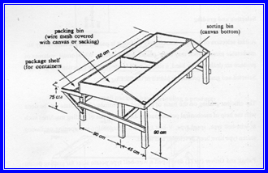
Sorting Bench
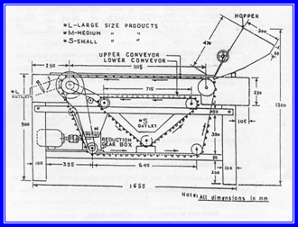
IARI Fruit and Vegetable Grader
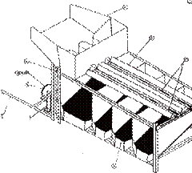
Divergent roller type fruit sorting machine for lemon and sapota, MPKV, Rahuri
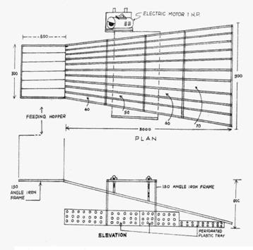
Divergent rails/slit size mango grader.CISH, Lucknow
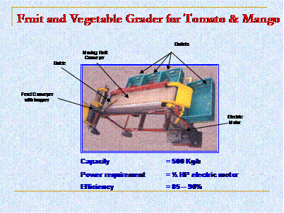
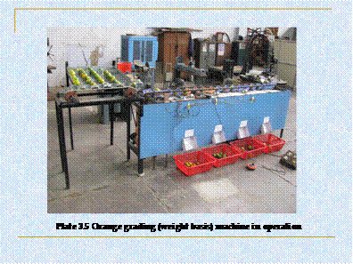
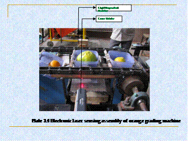
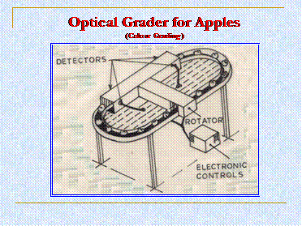
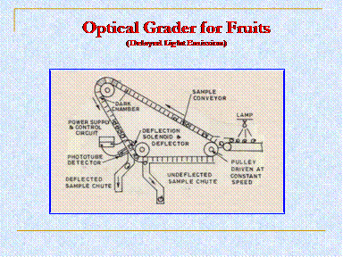
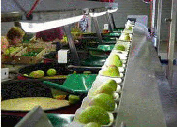
Mango grader
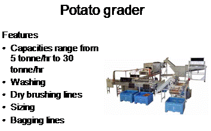
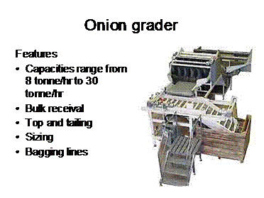
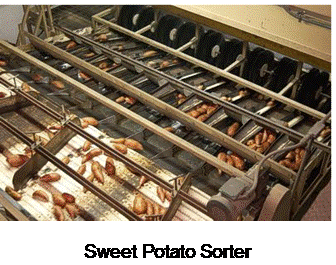
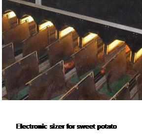
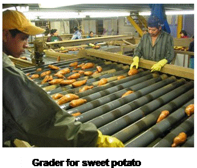
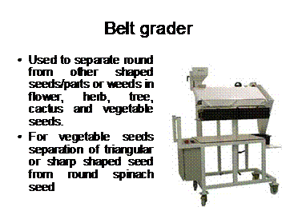
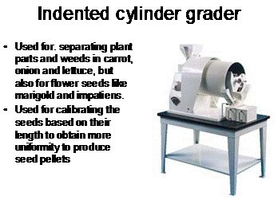
| Download this lecture as PDF here |